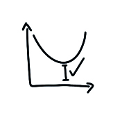
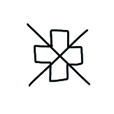

[ Velocità
Per agire, dobbiamo essere sicuri di poter avere un impatto e sentire che ciò che facciamo è importante.

Effetto IKEA

Perché attribuiamo un valore sproporzionato alle cose che abbiamo contribuito a creare?
Leggi di piùEffetto Dunning-Kruger

Perché non riusciamo a valutare con precisione le nostre capacità?
Leggi di piùIllusione del controllo

Perché pensiamo di avere più controllo sul mondo di quanto ne abbiamo?
Leggi di piùPregiudizio dell'autorità

Perché ci fidiamo sempre del medico, anche se potrebbe sbagliarsi?
Leggi di piùFallacia della mano calda

Perché ci aspettiamo che i successi precedenti portino a quelli futuri?
Leggi di più